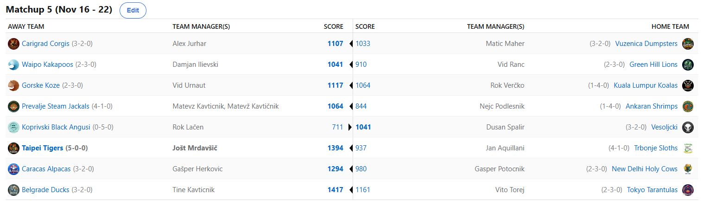
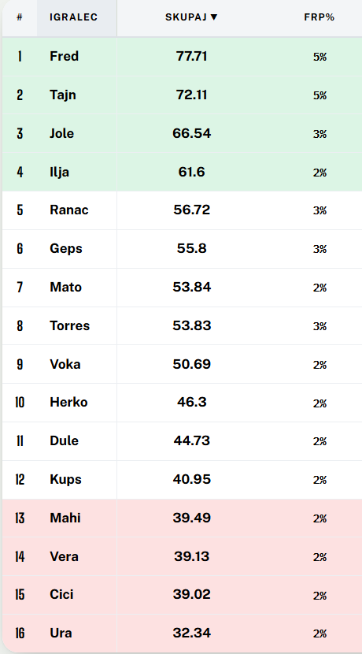
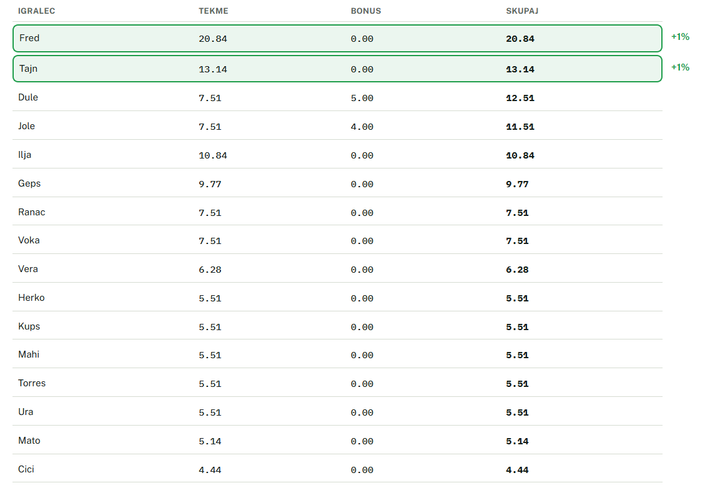
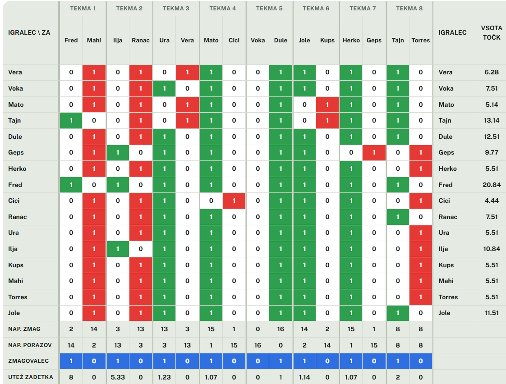
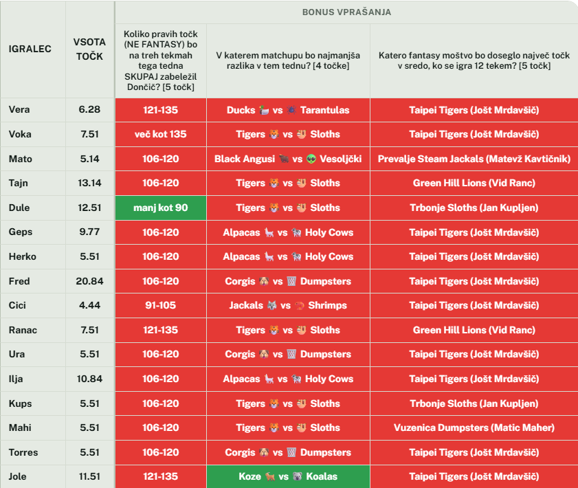
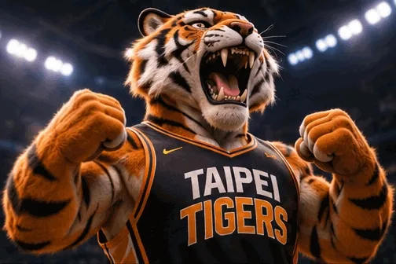

MATCHUP 5

Recap: MATCHUP 5
V skladu z nezanimivim tednom, ki je minil brez tistih pravih, po definiciji, tesnih matchupov, tudi naši reporterji niso
pretirano navdahnjeni.
Pohvaliti je treba Tinki Binkija. Najboljši score tedna, drugo mesto na predictionih, lagana zmaga in še karte za Jakova Jozinovića ima. Za nameček
pa še vodstvo z 1-0 v novi rundi četrtkovih rekreacij. Lpo, fino, fejn. Vito, podobno kot GSW, čaka Curryja, preden se ponovno vključi v borbo za
kakšno zmago.
Tudi Matevž, bolj znan kot Tinetov brat, je še naprej odlično na poti. Ker je bil ta teden proti kanonfutrčku iz Ankarana enostaven za popizdit, se je
Mato raje osredotočal na Lucijo in njene groceriese. Na kaj se trenutno osredotoča Cicko sicer ne vemo, vsekakor pa odgovor ni NBA Fantasy.
Enako lahko trdimo tudi za t.i. ažurni trio: Verati, Ranac, Voka. Ob pogledu na njihove rosterje, nas, zaposlene v optimizaciji, namreč zapečejo oči.
Ampak dobro, njihov problem … sta pač očitno THJ in Mathurin season holderja in kakor vemo, če je tvoj nasprotnik slab pač ni razloga za pripombe. Razen
če je tako zelo slab, da prav vsak bonus vprašanja tipa »najmanj točk«, ki vključujejo fantasy moštva odpadejo. Morda lahko kaj neskončne energije s
košarkarskega igrišča prenese v renovacijo Koprivskih Angusov?
Aja, free wine proti KK Avspuharji1,2,3 so si priigrali Ilja, Dule in Urnaut. Slednji se je še najbolj oznojil od vseh treh, a v končni fazi mu je več
sivih las povzročila Alysa Liu oz. nepoznavanje le-te in njene šekaste glave.
Pričakovali smo pretep, videli pa tepeško. Razpored je bil sicer soliden izgovor, a je že kaj kmalu postalo jasno, da mu živ boh ne more pomagati do zmage
proti Tigersom. 17 zaporednih zmag in na obzorju ne vidimo kandidata, ki bi ta niz lahko prekinil. Bo uspelo povezati celo koledarsko leto brez poraza?
Za to bi moral dobiti še dvoboja s Shrimpi in Levčki. Say less.
Derbi za najjačega Gašperja lige je brez večjih težav dobil Herko. Najučinkovitejši kvizmojstrov popravljalec se je sprehodil do tretje zmage proti Potočniku,
ki letos nekako ne opravičuje svojega vzdevka z valutami namesto črk. Se pa Herko tepe po glavi, da mu ne gre tako dobro kot fantazi tudi Egipt. Najbrž ga je
dodatno motiviralo dejstvo, da mu je nasproti stala Indijska franšiza. Logično.
Ostal nam je samo še obračun dveh, ki spamata kako bi kaj trejdala, a jima še ni prišlo na misel, da bi lahko med sabo. Fred je premagal Maherja. Quadruple
Miami je bil ta teden preveč fokusiran na GTA VI in ni bil kos Bricu Sensabaughu. 3-2 pa je zdaj score obeh.
Ni slabo za Akrapović-sponsored teams.
Thanksgiving teden prinaša el-shittico med Verčkom in Lačnom, 2 derbija moštev s 3-2 in pa 6. zmago Tigersov.
Predictioni so že na voljo, ne pozabite nanje in srečno.
Predictions
Lestvica

Točke v krogu

Matchups

Bonusi

Best memes
Baci Slothse
